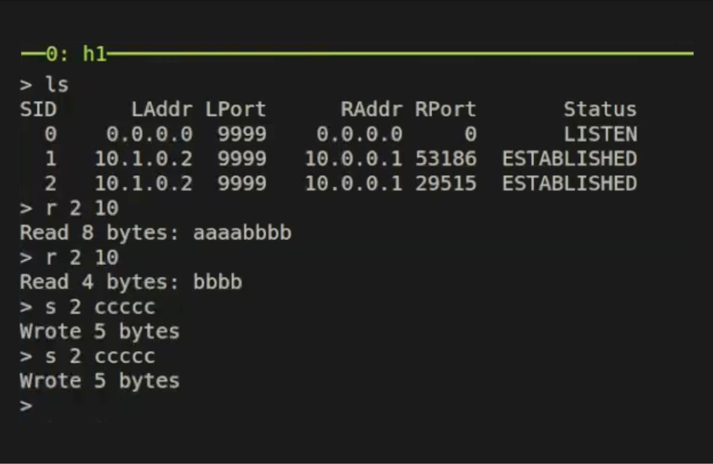
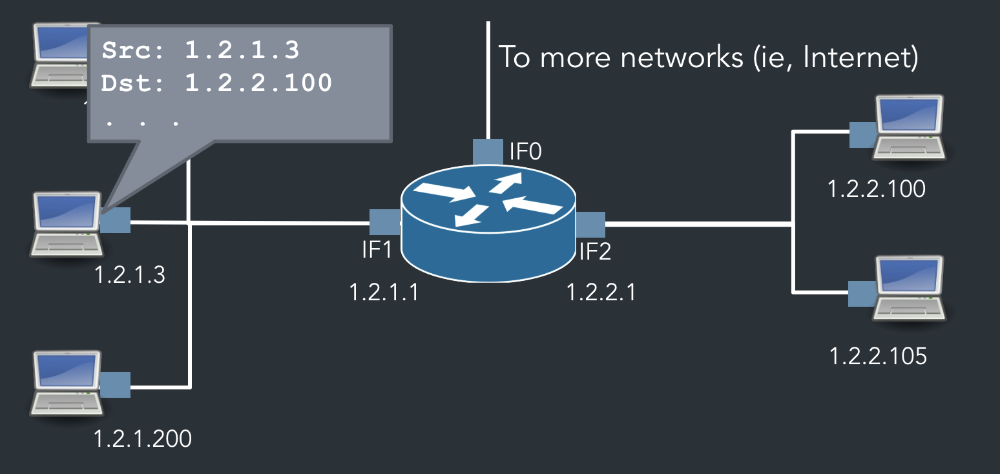
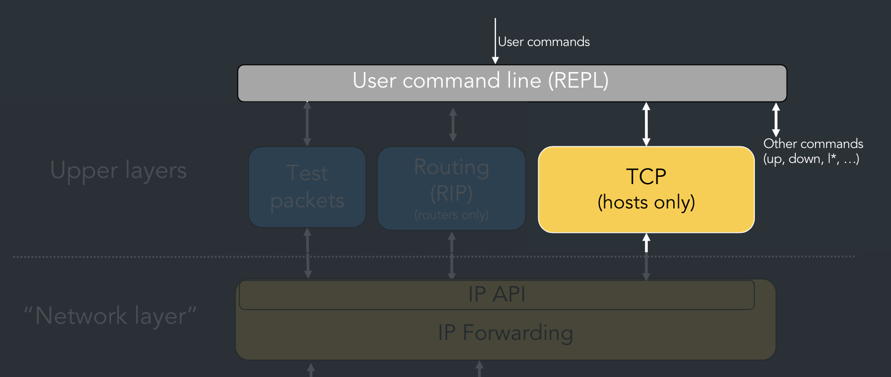

Implementation of IP/TCP Protocol
Go, Fall 2023
About
This was a pair project that spanned about two months, where we built an emulated version of the TCP and IP protocol using only UDP ports in Go. I mainly contributed to implementing the RIP protocol, zero-window probing, and constructing the bare-bone structure of the TCP protocol (without retransmissions and out-of-order packets).
Motivation
This project was constructed to better understand the intricacies of reliable network communication and also to practice making design decisions for a large codebase ahead of time. I also wanted to combine my interests of software development and systems design in one.
Project Demo
The figure below demonstrates establishing a connection between two hosts:

The figure below demonstrates sending and receiving bytes between two hosts:

The figure below shows the packets in flight using Wireshark:

IP
For the purposes of this project, we model the link layer using UDP ports, where each interface’s MAC address is the UDP port number. We embed the IP header with relevant information into the packet and send it to the relevant UDP socket. We provide the user with a send/receive API, where users can send IP packets to a specific protocol handler and also register handler functions that will receive the packets. The main goal of the IP stack is to, upon receiving a packet, send the packet to a higher network layer if the packet’s destination matches– otherwise, forward the packet to another router based on its forwarding table.
Feature: RIP Protocol
Each node will send periodic forwarding table updates to each of its own interfaces every 5 seconds. Our IP implementation also supports triggered updates, where the updates to the forwarding table are sent immediately after the forwarding table is updated. Split horizon with poisoned reverse is also utilized to avoid infinite loops of sending routing table information back to the original source of the update.
TCP
Our TCP implementation is built on top of our IP implementation and is registered in the IP stack as a callback handler.
Socket API
Our TCP implementation features a custom socket API that handles the underlying packet transmissions according to the TCP protocol (handshake, sequence numbers etc.):
- Listen sockets:
- VListen - listen for connections
- VAccept - accept connections
- Normal sockets:
- VConnect - connect to socket
- VRead - read from socket
- VWrite - write from socket
- VClose - proper teardown of sockets after all in-flight packets are received
Out of Order Packets
Our implementation also takes care of out-of-order packets with a priority queue; when the next sequence number matches the top of the queue, the packet is popped off the queue and stored in the buffer.
Zero-Window Probing
When the read buffer is out of space, the writing side repeatedly sends 1 byte of data until the byte is accepted (meaning that the read buffer has freed up space).
Retransmissions
Here, we also utilize a priority queue of un-ACKed segments that still need to be retransmitted. We maintain a goroutine that periodically retransmits the segment with the smallest sequence number until an ACK is received.
Takeaways
This project was arguably the most hefty project that I have ever completed. Although we were asked to follow a seemingly specific protocol, we still had to make various design choices about what data structures to use to track packets and how to compose our packets, and there were many times we had to scratch our implementation and restart because one of our proposed designs ran into a roadblock. However, it was incredibly satisfying to bring an abstract protocol to life using code, and I had a great time collaborating with my partner as well.